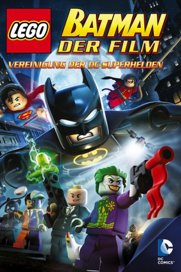

gesehen am 20.05.2015
gesehen am 20.05.2015Alternativ: LEGO Batman: The Movie - DC Super Heroes Unite gesehen am 20.05.2015
 
 IMDB-Wertung: 6.5 / 10
IMDB-Wertung: 6.5 / 10  Metascore:
Metascore: 
Der dunkle Ritter ist zurück und muss es mit altbekannten Widersachern aufnehmen, die Gotham City in Schutt und Asche legen wollen! Dieses Mal verbündet sich Batmans Erzfeind - der Joker - mit Lex Luthor und auch der Riddler, Catwoman sowie der Pinguin-Mann mischen kräftig mit. Insbesondere dem Joker ist daran gelegen, Batman aus dem Verkehr zu ziehen. Ohne Hilfe hat der Held Gothams keine Chance gegen die Übeltäter. Deshalb kommen ihm die Mitglieder der Gerechtigkeitsliga, dessen Anführer er ist, zu Hilfe und ünterstützen ihn. Seite an Seite kämpft Batman mit Wonder Woman, Green Lantern, The Flash, Superman und Co. Natürlich ist auch sein alter Weggefährte Robin wieder mit von der Partie. Können sie zusammen die Bösen besiegen, welche einmal mehr die Macht in Gotham an sich reißen wollen, oder werden der Joker und Lex Luthor durch den Besitz einer neuen Waffe - dem Deconstructor - am Ende den Sieg davontragen?
Jahr: 2013
Dauer: 71 Minuten
FSK:
Land: USA Studio: Warner Bros. Home Entertainment GroupTonspuren: DD5.1 - ,
Untertitel:
Auflösung: 1080p (1920x1080) Größe: 3020 MB
Genre: Animation/Trick, Action, Abenteuer, Familie, Sci-Fi
Regisseur: Jon Burton
Drehbuch: Jon Burton, David A. Goodman, David A. Goodman, Bob Kane, Jerry Siegel
Soundtrack: Rob Westwood
Darsteller:
 Clancy Brown als Lex Luthor
Clancy Brown als Lex Luthor Troy Baker als Bruce Wayne / Batman / Two-Face / Brainiac
Troy Baker als Bruce Wayne / Batman / Two-Face / Brainiac Charlie Schlatter als Robin / The Flash / Additional Voices
Charlie Schlatter als Robin / The Flash / Additional Voices Travis Willingham als Clark Kent / Superman
Travis Willingham als Clark Kent / Superman Townsend Coleman als Commissioner Gordon
Townsend Coleman als Commissioner Gordon Laura Bailey als Poison Ivy / Harley Quinn / Wonder Woman / Additional Voices
Laura Bailey als Poison Ivy / Harley Quinn / Wonder Woman / Additional Voices Steve Blum als Bane / Penguin / Additional Voices
Steve Blum als Bane / Penguin / Additional Voices Rob Paulsen als The Riddler / Additional Voices
Rob Paulsen als The Riddler / Additional Voices Brian Bloom als Cyborg
Brian Bloom als Cyborg Cam Clarke als Green Lantern / Martian Manhunter
Cam Clarke als Green Lantern / Martian Manhunter Christopher Corey Smith als The Joker
Christopher Corey Smith als The JokerDatei: X:\Kinder Collections\LEGO\LEGO Batman Der Film - Vereinigung der DC Superhelden (2013, FSK, 1920x1080).mkv seit 12.03.2015
Festplatte: Kinder-Filme+Trick
 Es gibt insgesamt 34 Filme in der Gruppe 'Kinder Collections\LEGO'
Es gibt insgesamt 34 Filme in der Gruppe 'Kinder Collections\LEGO'